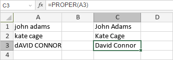

PROPER funkcija
PROPER funkcija je jedna od tekstualnih i funkcija za podatke. Koristi se za pretvaranje prvog znaka svake reči u veliko slovo, a svih preostalih znakova u mala slova.
Sintaksa
PROPER(text)
PROPER funkcija ima sledeći argument:
| Argument | Opis |
|---|---|
| text | Tekst koji želite delimično da pretvorite u velika slova. |
Napomene
Kako primeniti PROPER funkciju.
Primeri
Slika ispod prikazuje rezultat koji vraća PROPER funkcija.
